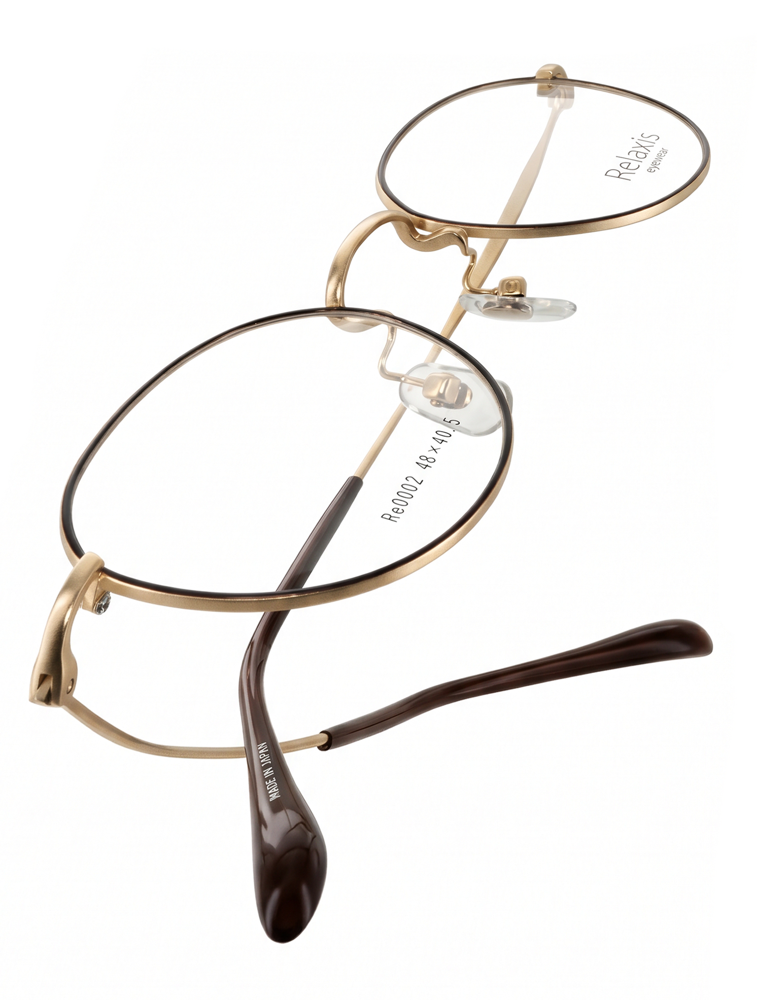
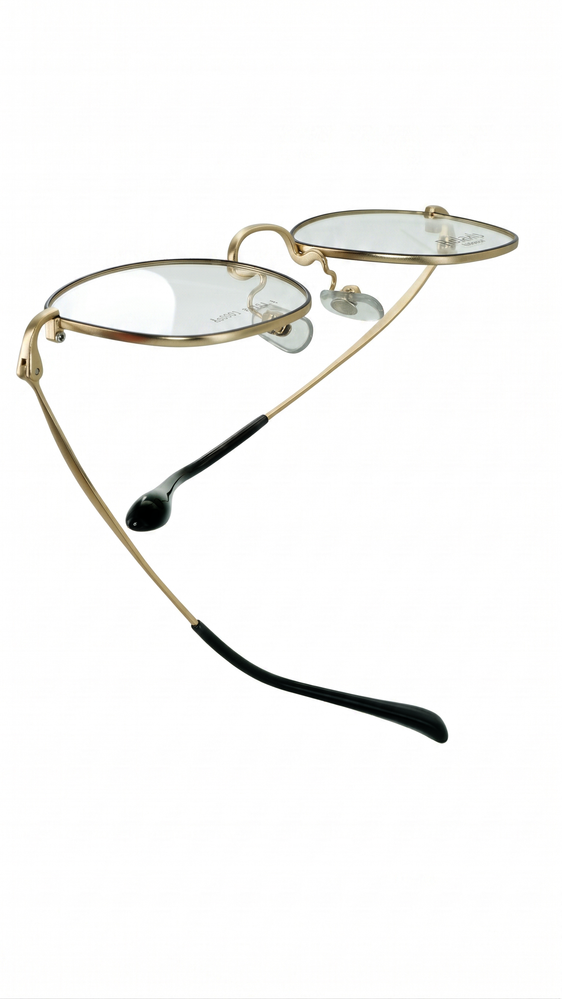
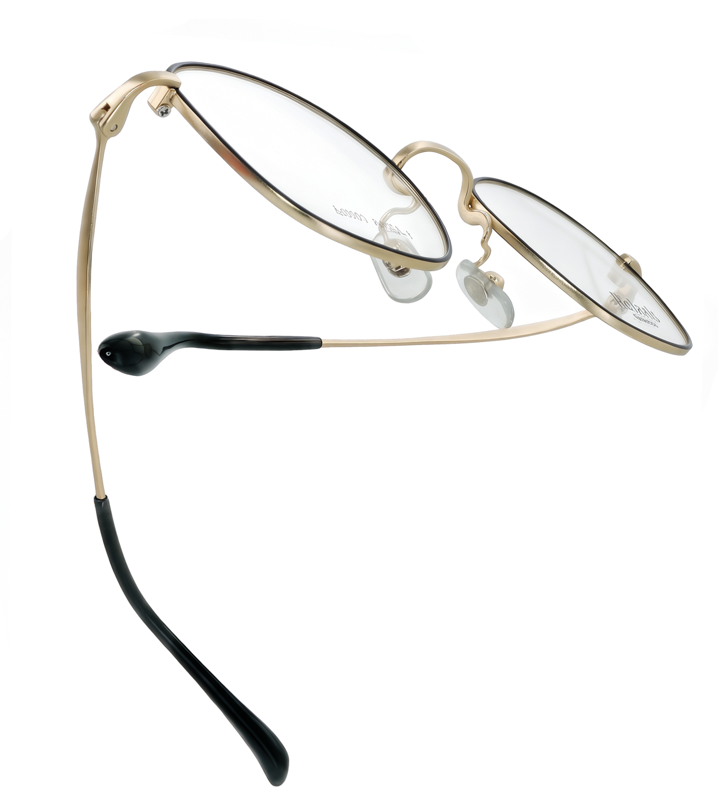

画像準備中
Re0001
オーバル ／ サイズ48
質感を選べる、三つの表情。
くわしく見る
丸みのあるオーバル型の、落ち着いた形です。細かな筋目を入れた仕上げや、黒の樹脂七宝をあしらったマットゴールドなど、仕上げの違う3色から選べます。軽やかなバランスで、毎日の服装に自然になじみます。
COLORフレームの色／耳にかかる部分の色
カラー3ダークブラウン
SCROLL

CONCEPT
Relaxis（リラクシス）は、「Relax（リラックス）」と「Axis（軸）」を合わせた名前です。
朝から夜まで、毎日かけているメガネ。
その毎日の軸に、リラックスとリカバリーという考え方を取り入れたい。
仕事の日も、休日も。いつもの自分のままで。
LINE UP
Relaxis eyewearは、クラシックな形を日本製のチタンで仕立てた、アイメガネのオリジナルメガネフレームです。レンズを囲むリム部分には軽いチタンを、耳にかけるテンプルにはしなやかに曲がるβチタンを使っています。鼻あてと耳にかかる部分には、ファイテン社の独自技術「ミクロチタンボール」を採用しました。身に着けることで、お顔回りのリラックスとリカバリーをサポートします。仕事にも休日にも、大人の毎日に寄り添う一本です。
Re0001
オーバル ／ サイズ48
丸みのあるオーバル型の、落ち着いた形です。細かな筋目を入れた仕上げや、黒の樹脂七宝をあしらったマットゴールドなど、仕上げの違う3色から選べます。軽やかなバランスで、毎日の服装に自然になじみます。
COLORフレームの色／耳にかかる部分の色
カラー3ダークブラウン

Re0002
ボストン ／ サイズ48
ゆったりとしたボストン型に、つやを抑えたマットゴールドを合わせました。耳にかかる部分がブラウンのモデルはやわらかく、黒の樹脂七宝のモデルは引き締まった印象です。スーツにも休日の服装にも合わせやすい一本です。
COLORフレームの色／耳にかかる部分の色
カラー2ダークブラウン
Re0003
ウェリントン ／ サイズ49
ブラック、アンティークグレー、筋目仕上げのシルバー。グレー系でまとめた、やわらかなウェリントン型です。すっきりと知的な印象をつくります。しっかりとしたかけ心地を求める方に。
COLORフレームの色／耳にかかる部分の色
カラー1ブラック

Re0004
ヘキサゴン（六角形） ／ サイズ49
ヘキサゴン型（六角形）を、やわらかな線で仕上げた形です。アンティークゴールドや筋目仕上げのゴールドに、ブラウンの耳にかかる部分を合わせました。ヴィンテージのような温かみと、チタンならではの軽さを両立しています。
COLORフレームの色／耳にかかる部分の色
カラー1ダークグレー
全品番共通：日本製。レンズを囲むリム部分はチタン、耳にかけるテンプルはβチタン。
・本商品はファイテン社の独自技術を取り入れたコラボレーション商品です。
・この商品のノーズパッドおよびモダン部分にファイテン社の水溶化メタル技術を採用しており、この技術を用いた商品を身に着けることでカラダのリラックスとリカバリーをサポートします。
※上記文章はファイテン社の技術に対するもので、商品全体に対するものではありません。

仕事の日も、休日も。
DETAILS

01
形は、昔から長く愛されてきたクラシックなデザインです。伝統工芸の七宝の風合いを現代の技術で再現した樹脂七宝や、細かな筋目を入れた仕上げ（シャーリング）など、細かな部分まで丁寧に仕上げました。

02
レンズを囲むリム部分には軽いチタンを、耳にかけるテンプル部分には、しなやかに曲がるβチタンを使っています。仕事の場にも、休日の服装にも、自然になじみます。

03
フレームは日本製です。

04
メガネが顔に触れるのは、鼻あて（ノーズパッド）と、耳にかかる先端部分の2か所です。この2か所に採用した「ミクロチタンボール」は、世界のトップアスリートからも信頼を集める技術です。身に着けることで、お顔回りのリラックスとリカバリーをサポートします。
・本商品はファイテン社の独自技術を取り入れたコラボレーション商品です。
・この商品のノーズパッドおよびモダン部分にファイテン社の水溶化メタル技術を採用しており、この技術を用いた商品を身に着けることでカラダのリラックスとリカバリーをサポートします。
※上記文章はファイテン社の技術に対するもので、商品全体に対するものではありません。
いつもの自分のままで。